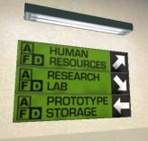

|
|
SCIENCE AND INDUSTRY MANUAL Translated by Tiga |


- Einleitung
- Basics
- Advanced
- Interface
- Gameplay Ratgeber
An advanced guide is also available, which gives more details about the gameplay of Science & Industry:
Science and Industry ist eine Teamplay Modifikation für Half-Life in der du die Rolle eines Sicherheitsoffiziers einer der beiden konkurrierenden Hightech Forschungsfirmen übernimmst. Jede der Firmen beginnt mit 3 Wissenschaftlern, die fleißig Forschen um bessere Ausrüstung und mehr Geld für Deine Firma zu produzieren. Doch es kommt noch besser, du kannst die Wissenschaftler des gegnerischen Teams "rekrutieren" und sie in dein Labor zurückbringen um einen überwiegenden Vorteil für deine Firma herauszuholen. Alles was du zu tun hast ist in die gegnerischen Laboratorien einzudringen und mit dem Koffer einen ihrer Wissenschaftler auf den Kopf zu schlagen....Der Trick ist nur lebend mit dem neuen "Rekruten" zum eigenen Administrator zurückzukehren
Der Haken ist das jede Firma mit sehr niedriger Technologie beginnt... Dein Team muss die besten Technologien auswählen! Waffentechnologie macht dich gefährlicher während der Kämpfe, aber du wirst es schwer haben einen gegnerischen Wissenschaftler zu entführen wenn du keine Panzerung hast. Einige Technologien lassen deine Wissenschaftler schneller produzieren...das gibt dir die Möglichkeit ein enges Spiel noch für dich zu entscheiden! Alles dies kann dein sein.....du musst dich nur als Sicherheitsoffizier bei Midland Carbide Labs [MCL] oder Amalgamated Fluorodynamics [AFD] bewerben.
Für mehr Informationen lies die Sektionen unterhalb.
Um ein wertvolles Mitglied für
deine Firma zu sein musst du zuerst lernen dich in deiner Basis zurechtzufinden. Jede Map hat ein
verschiedenes Aussehen, aber alle wichtigen Elemente sollten dir bekannt sein. Folge den Hinweisschildern
die du überall in deiner Basis finden kannst um die wichtigsten Einrichtungen zu finden. Wenn du dir
nicht sicher bist in welcher Basis du dich befindest dann schau dir die Farben an: blau steht für
Midland Carbide Labs (MCL) und grün für Almalgated Flurodynamics (AFD).
- Cloning Facilities - Spieler die während ihres Dienstes für ihre Firma getötet werden, werden in dieser Einrichtung neu geklont. In diesem Raum findest du auch health und armor chargers um deine Vorräte wieder aufzustocken. Wenn du währen deines Dienstes verletzt wirst, kannst du dich hierher zurückziehen um dich von deinen Wunden zu erholen.
- Prototype Storage - Die Waffen und Erfindungen die deine Firma für dich produziert werden im Prototype Storage gelagert. Hier findest du experimentelle Prototypen der neuesten Errungenschaften deiner Firma, sowie auch Behälter mit Munition und andere Waffen. In den meisten Basen ist dieser Raum mit den Cloning Facilities zusammengelegt um den Angestellten die Gelegenheit zu geben sich gleich nach dem respawn auszurüsten.
- Research Labs - Die Research Laboratory sind der Platz wo die Wissenschaftler ihre Arbeit verrichten. Beschütze sie mit deinem Leben.
- Human Resources - Der Administrator überwacht die Operationen der Firma von seinem Büro aus: der Human Ressources. Wenn du etwas gefunden hast das sich als wertvoll für deine Firma erweisen könnte (rekrutierte Wissenschaftler, gestohlene Waffen, etc.), bring es zu ihm.
- Computer Labs - Einige Maps haben teure Maschinen die die Kapazität der Wissenschaftler erhöhen. Verteidige diesen Bereich vor allen möglichen Möchtegern-Saboteuren.
 Als
Sicherheitsoffizier ist es deine Aufgabe die Laboratorien deiner Firma sicher zu halten. Wenn alles
gut geht sollten sich deine Wissenschaftler in den Labors herumbewegen, während sie eine Menge
Forschungszeug machen das du sowieso nicht verstehst. Abhängig vom Aussehen der Map sind die
Laboratorien ein großer Raum oder mehrere kleine Räume. Deine Wissenschaftler werden sich im
gesamten Laborbereich frei herumbewegen. Wenn du deine Wissenschaftler nicht störst, und auch
dafür sorgst das sie nicht gestört werden, werden sie besser Forschen (und das heißt
bessere Waffen, Panzerung und neue Technologien und Spielerein für doch) und mehr Geld für dein
Team produzieren.
Als
Sicherheitsoffizier ist es deine Aufgabe die Laboratorien deiner Firma sicher zu halten. Wenn alles
gut geht sollten sich deine Wissenschaftler in den Labors herumbewegen, während sie eine Menge
Forschungszeug machen das du sowieso nicht verstehst. Abhängig vom Aussehen der Map sind die
Laboratorien ein großer Raum oder mehrere kleine Räume. Deine Wissenschaftler werden sich im
gesamten Laborbereich frei herumbewegen. Wenn du deine Wissenschaftler nicht störst, und auch
dafür sorgst das sie nicht gestört werden, werden sie besser Forschen (und das heißt
bessere Waffen, Panzerung und neue Technologien und Spielerein für doch) und mehr Geld für dein
Team produzieren.
Die Wissenschaftler deiner Firma werden es SEHR schwer finden sich zu konzentrieren wenn viel Lärm um sie herum ist, deshalb ist es dein Job in den Labors für Ruhe zu sorgen. Du solltest auch dafür sorgen das keine Waffen in den Laboratorien abgefeuert werden. Nichts stört die Arbeit mehr, als eine explodierende Raketen nahe wichtiger Experimente, und dies beinhaltet sowohl deine Waffen als auch die des Gegners.
Wenn du es nicht schaffst in den Labors für Ruhe zu sorgen wirst du bemerken das die Effizienz deiner Wissenschaftler zurückgeht. Dies wirst du an dem Atomsymbol in der unteren rechten Ecke deines Huds erkennen. Wenn alles gut geht wird das Atom vollkommen weiß sein. Wenn deine Wissenschaftler gestört werden, wird es nur teilweise weiß sein, der Rest grau. Wenn deine Wissenschaftler weniger effektiv sind werden sie weniger Forschen und weniger Geld produzieren.
Deine Wissenschaftler können von deinen Gegnern getötet werden - nicht aber von dir. Wenn du sie attackierst werden sie sich nur gestört fühlen was ihre Effizienz beeinträchtigt. Es ist ein guter Weg die gegnerische Firma zu verletzen in dem du sie dazu bringst viel Geld für neue Wissenschaftler auszugeben. Aber denke auch daran das es deine Wissenschaftler nicht gerne sehen wenn du ihre Kollegen im gegnerischen Team umbringst! Dies wird dazu führen das sie nicht mehr so effektive forschen, je mehr gegnerische Wissenschaftler du tötest. Solltest du eine hohe Nummer von gegnerischen Wissenschaftlern töten werden deine Wissenschaftler dir einen Chip in deinen Kopf einpflanzen der dir jedes Mal einen Elektroschock zufügen wirst wenn du einen gegnerischen Wissenschaftler verletzt. Du kannst auch Punkte für das Töten von gegnerischen Wissenschaftlern verlieren. Im Allgemeinen ist das Töten von gegnerischen Wissenschaftlern also eine schlechte Idee. Wie auch immer, wenn dein Team keine Wissenschaftler mehr hat, dann kann die Jagdsaison auf das gegnerische Wissenschaftlerteam eröffnet werden!
Zu Beginn einer neuen Map wird jedes Team ein bisschen Geld, 3 Wissenschaftler und ein paar Waffen (Koffer und Pistole) haben. In ein paar Sekunden wird dein Forscherteam bereit sein um mit dem Forschen zu beginnen und ein Wählmenu wird erscheinen. In diesem hast du ein paar Sekunden Zeit das nächste Forschungsziel festzulegen. Danach werden die Stimmen deiner Teamkameraden ausgewertet und das neue Forschungsziel wird festgelegt.
S&I Technology Tree (Full-sized chart)
 Der Forschungsbaum ist
ziemlich komplex, in einem ähnlichen Layout wie der Forschungsbaum der Civilization Spiele. Jede neue
Technologie die du erforschen willst erfordert das du bereits die Voraussetzungen dafür erforscht hast
bevor die neue Technologie erforscht werden kann. Jedes Mal wenn die Wissenschaftler bereit sind eine neue
Technologie zu erforschen wird ein Wählmenu erscheinen und dir die nächsten sechs
Möglichkeiten zur Wahl stellen. Diese sechs Möglichkeiten beinhalten Waffen, bessere Panzerung,
ja sogar Spezialimplantate die es deinem Team möglich machen im Kampf effektiver zu sein. Wenn es
mehrere Forschungsthemen gibt für die die Voraussetzungen erfüllt sind werden meistens die sechs
besten angezeigt. Vergiss nicht das dein Team die Runde ohne Panzerung beginnt, und du wirst nichts von den
armor rechargers bekommen solang du nicht Panzerungstechnologien erforscht hast.
Der Forschungsbaum ist
ziemlich komplex, in einem ähnlichen Layout wie der Forschungsbaum der Civilization Spiele. Jede neue
Technologie die du erforschen willst erfordert das du bereits die Voraussetzungen dafür erforscht hast
bevor die neue Technologie erforscht werden kann. Jedes Mal wenn die Wissenschaftler bereit sind eine neue
Technologie zu erforschen wird ein Wählmenu erscheinen und dir die nächsten sechs
Möglichkeiten zur Wahl stellen. Diese sechs Möglichkeiten beinhalten Waffen, bessere Panzerung,
ja sogar Spezialimplantate die es deinem Team möglich machen im Kampf effektiver zu sein. Wenn es
mehrere Forschungsthemen gibt für die die Voraussetzungen erfüllt sind werden meistens die sechs
besten angezeigt. Vergiss nicht das dein Team die Runde ohne Panzerung beginnt, und du wirst nichts von den
armor rechargers bekommen solang du nicht Panzerungstechnologien erforscht hast.
Die Geschwindigkeit mit der ein Ziel erforscht wird hängt von der Anzahl der Wissenschaftler des Teams
und von dem Lärmpegel in den Laboratorien ab. Wenn ein Team einen gegnerischen Wissenschaftler
rekrutiert ist es möglich das sie dem anderen Team um einiges voraus sein werden.
Ein guter Weg um die Produktivität deiner Labors zu steigern ist, einen Wissenschaftler der gegnerischen Firma zu "rekrutieren". Dies kannst du machen in dem du in die Laboratorien deines Gegners schleichst/einbrichst, deinen Koffer hervorholst und einen Wissenschaftler auf den Kopf schlägst. Unglücklicherweise werden die Wissenschaftler dich an deiner Uniform als Gegner erkennen und panisch von dir davonlaufen. Normalerweise ist es nicht so schwer sie einzufangen (solange sich nicht auch gegnerische Sicherheitsoffiziere in der Nähe befinden), und du kannst sie schultern und zu deinem Administrator bringen.
 Wenn du einen Wissenschaftler gekidnappt
hast musst du dich auf den Weg zu deiner Firma machen und den Administrator finden. Der Administrator
(links abgebildet) wird den Wissenschaftler davon "überzeugen" das er lieber bei deiner Firma arbeiten
will und dein Team wird einen fleißigen Forscher mehr haben. Wenn du Probleme haben solltest den
Administrator zu finden, dann halte nach den "Human Resources" Schildern Ausschau, sie werden dich zu ihm
führen.
Wenn du einen Wissenschaftler gekidnappt
hast musst du dich auf den Weg zu deiner Firma machen und den Administrator finden. Der Administrator
(links abgebildet) wird den Wissenschaftler davon "überzeugen" das er lieber bei deiner Firma arbeiten
will und dein Team wird einen fleißigen Forscher mehr haben. Wenn du Probleme haben solltest den
Administrator zu finden, dann halte nach den "Human Resources" Schildern Ausschau, sie werden dich zu ihm
führen.
Wenn du stirbst während du einen Wissenschaftler trägst, wird er dort liegen bleiben wo du
gestorben bist, jedoch wird er zu seinem Team zurückkehren wenn er sich von dem Schlag auf den Kopf
erholt hat. Solange er ohnmächtig ist kann dein Team ihn jedoch immer noch aufsammeln und zu deiner
Basis bringen. Nur das Team das versucht hat den Wissenschaftler zu stehlen kann ihn auch wieder aufheben,
das andere Team muss versuchen ihn solange zu beschützen bis er aus eigener Kraft zu den Labors
zurückkehren kann.
Wenn du einen Gegner tötest der eine neue Technologie die dein Team noch nicht erforscht hat verwendet hat, kannst du seine Waffe aufheben und sie zu deinem Administrator zurückbringen. Jedes erfolgreich abgelieferte Stück wird die Zeit verringern die deine Wissenschaftler brauchen um es zu erforschen, der Effekt ist kumulativ. Wie auch immer, um Zugang zu dieser gestohlenen Technologie zu bekommen, musst du deinem Forschungsteam durch Wahl mitteilen das sie diese Technologie erforschen sollen.
Wenn deine Firma in Waffentechnologie in Führung liegt, oder sie eine Erfindung hat die dein Gegner nicht hat solltest du auf der Hut sein! Wenn du in einen Kampf verwickelt wirst in dem du diese Waffe benützt und du wirst getötet, dann kann dein Gegner sie aufheben und deinen Vorteil zunichte machen in dem er die Technologie stiehlt. Wenn du also schwer verletzt bist solltest du auf deine wertvolle Technik Acht geben!
 Viele
Hightech Einrichtungen verlassen sich auf teures Equipment um bei der Forschung zu helfen. Obwohl dieses
Equipment der Firma eine Menge Zeit und Geld sparen kann hinterlässt es die Firma auch verwundbar
gegenüber Saboteuren. Solltest du es schaffen dich in die gegnerische Research Facility zu schleichen,
dann halte Ausschau nach Computern, Klon-Ausrüstung oder alles andere das wichtig für den Gegner
aussieht.
Viele
Hightech Einrichtungen verlassen sich auf teures Equipment um bei der Forschung zu helfen. Obwohl dieses
Equipment der Firma eine Menge Zeit und Geld sparen kann hinterlässt es die Firma auch verwundbar
gegenüber Saboteuren. Solltest du es schaffen dich in die gegnerische Research Facility zu schleichen,
dann halte Ausschau nach Computern, Klon-Ausrüstung oder alles andere das wichtig für den Gegner
aussieht.
Wenn du wissen willst was Wichtig ist, dann lies dir die Readme der Map durch. Sie wird angezeigt wenn du
dein Team auswählen kannst, am Anfang des Spiels. Lies dir die wichtigen Ziele für die Map durch,
und sieh auch welche Ausrüstung du suchen und zerstören solltest.
Der beste Weg gegnerische Ausrüstung zu zerstören ist mit deinem Koffer oder mit Sprengstoff. Wenn die Ausrüstung zerstört ist wird die Firma Zeit und Ressourcen investieren müssen um es zu reparieren, und nach einem gewissen Zeitraum wird es ersetzt werden.
Manche Maps beinhalten spezielle Ressourcen die deiner Firma einen Vorteil verschaffen könnten. Lies dir die Readme der Map am Anfang des Spiels durch und du solltest wissen welche Ressourcen es in dieser Map gibt.
Alle Ressourcen sind verschieden, und werden ausführlich in der Readme beschrieben. Wie auch immer, im Allgemeinen werden sie immer an einem ähnlichen Punkt zu finden sein (die gegnerische Basis oder neutraler Boden), und du musst sie zu deinem Administrator bringen. In vielen Dingen ist dies gleich mit dem Rekrutieren eines Wissenschaftlers aber manche Ressourcen unterscheiden sich. Ressourcen werden nicht liegen bleiben wenn du stirbst während du versuchst sie zum Administrator zu bringen. Lies die Readme um sicher zu gehen das du weißt welches Risiko du für die Ressource eingehst.
Sollte es passieren das du während deines Dienstes stirbst, wird deine Firma so großzügig sein und dich klonen. Die Klontechnologie kostet Geld (siehe die Tabelle unterhalb). Eine Firma dessen Sicherheitsoffiziere viel Zeit mit Sterben verbringen wird nicht viel Geld haben. Es wird auch jedes Mal ein paar Sekunden dauern bis der Kloningprozess beendet ist bevor du respawnen kannst. Nachdem du geklont wurdest, wirst du für einige Sekunden unverwundbar sein, nutze diese Zeit um deine Kloningkammern von gegnerischen Campern zu befreien.
Science and Industry verwendet verschiedene Statistiken um die Leistung der Spieler und des Teams festzustellen. Teampunkte wird mit der Höhe des Kontenstands der Firma gemessen, wo hingegen die Leistung eines Spielers mit Frags gemessen wird. Bonuspunkte werden für verschiedene Situationen verteilt, um Offensive und Defensive zu balancieren Die momentanen Teampunktestände werden in der oberen rechten Ecke deines Bildschirms angezeigt..
| Firmenvermögen | |
| Basiseinkommen pro Sekunde | $60 |
| Extraproduktion pro Wissenschaftler (bei max. Effizienz) | $15 |
| Kloning Service | -$800 |
| Einstellen eines neuen Wissenschaftlers | -$1,000 |
| Persönliche Bonuspunkte | |
| Töten eines gegnerischen Sicherheitsoffiziers | 1 |
| Töten des gegnerischen Angestellten des Monats | 2 |
| Töten eines gegn. Sicherheitsoffiziers i. d. Nähe d. Labors (Forscher verärgert) | 2 |
| Töten eines gegn. Sicherheitsoffiziers i. d. Nähe d. Labors (Forscher nicht verärgert) | 3 |
| Töten eines gegn. Rekrutierers (jem. der schon einen Forscher rekrutiert hat) | 2 |
| Töten eines gegn. Sicherheitsoffiziers während er einen Forscher rekrutiert | 2 |
| Erfolgreiches Rekrutieren eines Wissenschaftlers | 5 |
| Bergen gegnerischer Waffentechnologie | 2 |
| Zerstören gegnerischer Ausrüstung | variiert |
| Erobern von Ressourcen | variiert |

Folgendes wird am HUD angezeigt:
Personal
 Die linke untere Ecke
deines HUDs zeigt Informationen über dich. Dies beinhaltet deine Gesundheit, Panzerungslevel und
Anzahl der Munition. Aus verständlichen Gründen werden diese Daten konstant angezeigt. Gesundheit
und Panzerung können durch Health und Armor Chargers wiederhergestellt werden. Diese können in
der Basis gefunden werden und durch verschiedene Technologien verbessert werden. Deine Munition kann mit
den Munitionsbox in der Prototype Storage in deiner Basis oder durch regenerative Technologien, wie z.b.
Personal Ammunition Replicators wiederaufstocken. Vergiss nicht das deine Firma ohne Panzerung beginnt! Bis
die Technologie erforscht ist, kannst du die Armor Charger nicht verwenden.
Die linke untere Ecke
deines HUDs zeigt Informationen über dich. Dies beinhaltet deine Gesundheit, Panzerungslevel und
Anzahl der Munition. Aus verständlichen Gründen werden diese Daten konstant angezeigt. Gesundheit
und Panzerung können durch Health und Armor Chargers wiederhergestellt werden. Diese können in
der Basis gefunden werden und durch verschiedene Technologien verbessert werden. Deine Munition kann mit
den Munitionsbox in der Prototype Storage in deiner Basis oder durch regenerative Technologien, wie z.b.
Personal Ammunition Replicators wiederaufstocken. Vergiss nicht das deine Firma ohne Panzerung beginnt! Bis
die Technologie erforscht ist, kannst du die Armor Charger nicht verwenden.
Research
 Die linke untere Ecke
deines HUDs zeigt Informationen über deine Firma. Das Atom zeigt die Effizienz deines Forschungsteams.
Wenn das Atom grau ist, dann arbeitet dein Team nicht mit maximaler Effizienz. Wenn es weiß ist,
arbeitet das Team mit 100%iger Effizienz. Wenn das Atom in einem radioaktiven Grün dargestellt wird
dann arbeiten deine Wissenschaftler mit besserer Effizienz als gewöhnlich möglich (z.b. nach
Anwendung des Mindrays). In dem gezeigten Beispiel arbeiten die Wissenschaftler mit 100%iger Effizienz. Du
kannst die Effizienz eines einzelnen Forschers überprüfen indem du den Cursor auf ihm
platzierst.
Die linke untere Ecke
deines HUDs zeigt Informationen über deine Firma. Das Atom zeigt die Effizienz deines Forschungsteams.
Wenn das Atom grau ist, dann arbeitet dein Team nicht mit maximaler Effizienz. Wenn es weiß ist,
arbeitet das Team mit 100%iger Effizienz. Wenn das Atom in einem radioaktiven Grün dargestellt wird
dann arbeiten deine Wissenschaftler mit besserer Effizienz als gewöhnlich möglich (z.b. nach
Anwendung des Mindrays). In dem gezeigten Beispiel arbeiten die Wissenschaftler mit 100%iger Effizienz. Du
kannst die Effizienz eines einzelnen Forschers überprüfen indem du den Cursor auf ihm
platzierst.
Die Nummer neben dem Atom zeigt die Nummer der Wissenschaftler die derzeit für ihr Team in ihrem Labor arbeiten. Wenn du bemerkst das diese Nummer plötzlich sinkt dann hat das einen von 2 Gründen: Entweder wurde ein Wissenschaftler getötet oder er würde rekrutiert.
Unter dem Atom ist ein Bild der Technologie die gerade erforscht wird. Neben dem Bild ist die Fortschrittsanzeige. Die Anzeige füllt sich langsam von rechts nach links während des Forschungsprozesses. Wenn die Anzeige komplett weiß ist ist die Forschung beendet und das nächste Forschungsziel wird in Angriff genommen.
Geldanzeige
 In der oberen rechten (oder in der
unteren linken, abhängig von deiner Einstellung der hud_showTeamCash variable) Ecke wird das momentane
Geld beider Firmen angezeigt. Dies ist praktisch um eine kurze Übersicht über die Punkte der
Teams zu bekommen. Unter der Geldanzeige ist ein Countdown der anzeigt wie viel Zeit von der Map noch
übrig ist. Nach Ablauf dieser Zeit wird der Sieger festgestellt.
In der oberen rechten (oder in der
unteren linken, abhängig von deiner Einstellung der hud_showTeamCash variable) Ecke wird das momentane
Geld beider Firmen angezeigt. Dies ist praktisch um eine kurze Übersicht über die Punkte der
Teams zu bekommen. Unter der Geldanzeige ist ein Countdown der anzeigt wie viel Zeit von der Map noch
übrig ist. Nach Ablauf dieser Zeit wird der Sieger festgestellt.
Traganzeige
 Wenn du momentan
einen Forscher auf deinem Rücken trägst wird dies durch ein Bild auf deinem HUD angezeigt.
Über dem Bild (ein Wissenschaftler mit einer Glühbirne über seinem Kopf) ist der Name des
Forschers den du gerade trägst.
Wenn du momentan
einen Forscher auf deinem Rücken trägst wird dies durch ein Bild auf deinem HUD angezeigt.
Über dem Bild (ein Wissenschaftler mit einer Glühbirne über seinem Kopf) ist der Name des
Forschers den du gerade trägst.
 Ressourcen werden
ähnlich wie Forscher angezeigt, aber sie werden anders gehandhabt. Ein Bild repräsentiert die
Ressource die du gerade trägst. Der Name der Ressource wird oberhalb des Bildes angezeigt.
Ressourcen werden
ähnlich wie Forscher angezeigt, aber sie werden anders gehandhabt. Ein Bild repräsentiert die
Ressource die du gerade trägst. Der Name der Ressource wird oberhalb des Bildes angezeigt.
Schau immer auf den Science and Industry Punktestand, er ist wichtig um sich mit den Teamkameraden zu koordinieren.

Du wirst bemerken das hier Gruppen angezeigt werden. Die ersten beiden sind die beiden Firmen: Midland Carbide Labs (MCL) und Almalgated Flurodynamics (AFD). Neben dem Namen der Firma kannst du sehen wie viel Geld die Firma bisher erwirtschaftet hat. Schau dir diesen Wert genau an, denn die Firma die das meiste Geld macht, gewinnt! Die dritte Gruppe (Unemployed) listet die Spieler auf die noch nicht einem Team beigetreten sind, oder aber nur zusehen.
Employee of the Month
Wenn jemand "E" neben seinem Namen stehen hat ist er der "Employee of the Month" (Angestellter
des Monats). Diese Spieler haben bewiesen das sie erfahrene und gute Spieler sind. Ein guter Angestellter
des Monats kann seinem Team helfen die Forschung zu managen und das Team zu leiten. Ein schlecht oder nicht
geleitetes Team wird es viel schwerer haben einen Sieg zu erringen.
Llamas
Wenn ein Spieler "L" neben seinem Namen stehen hat, dann pass auf! Um diese "Auszeichnung" zu erhalten
hat er schon ein "llama" Verhalten gezeigt, das heißt er ist dem Team nicht sehr hilfreich, sondern
hilft eher dem Gegner. Niemand mag ein Llama. Wie auch immer, wenn der Spieler sich "bessert" wird er
seinen Llama Status wieder loswerden.

Angestellte in deinem Team die gerade einen Forscher tragen werden auf der Anzeigetafel weiß hervorgehoben. Finde sie und hilf ihnen den Forscher sicher zum Administrator zu bringen! Du musst auch verstehen das sie während dieser Zeit nicht sehr gesprächig sind denn sie haben alle Hände voll damit zu tun zu überleben!
Ressourcenträger

Wenn einer deiner Teamkameraden eine Ressource trägt, wird sein Name braun hervorgehoben. Die Ressource die er trägt hängt von der jeweiligen Map ab. Gehe sicher das du immer die Readme liest damit du weißt wo du die Ressourcen finden kannst!
Jetzt wo du mit den Grundlagen von Science and Industry vertraut bist, ein paar Tipps:
- Der Teil der bei S&I am meisten von neuen Spielern übersehen wird, ist der das man eine gute Verteidigung braucht. Vergiss nicht das es viel leichter ist die Wissenschaftler zu verteidigen als sie zu rekrutieren. Außerdem bekommst du Bonuspunkte für das Verteidigen und du bist näher an den Nachschubräumen. Arbeite in einem organisierten Team in der jeder eine bestimmte Rolle hat, dies wird dir den Sieg garantieren!
- Wenn du respawnest, verschwende nicht zuviel Zeit mit dem bunkern von Munition und Waffen, sondern rüste dich möglichst schnell aus. Jede Sekunde die du dort vergeudest ist eine Sekunde mehr für deinen Gegner!
- Entscheide weise für welche Technologie du wählst. Neue Waffen sind lustig, aber manchmal sind Implantate oder Panzerung besser. Fast alle höheren Technologien erfordern Manufacturing Process Upgrade, dies macht diese Technologie sehr wichtig. Viele Technologien sind auch sehr hilfreich, weil sie zu anderen Technologien leiten. Bevor du blind losvotest, solltest du dich lieber über die Möglichkeiten informieren. Sieh dir den Technology Tree (Full-sized chart) an.
- Sei kein Llama. Sei nett, hilfsbereit, spiele fair, sorge für ausgeglichene Teams und vor allem habe SPASS!